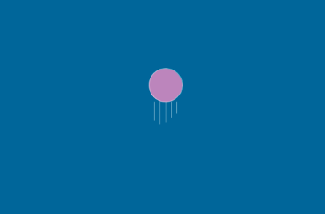
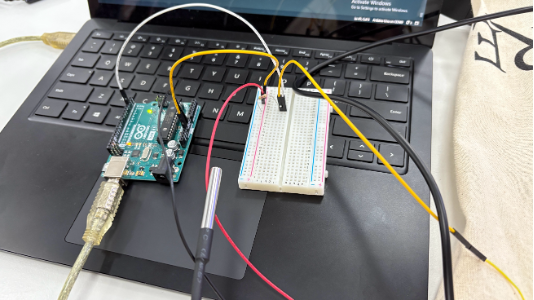
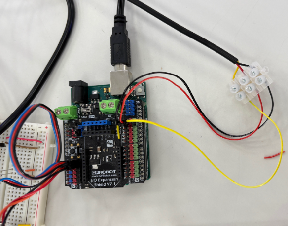

This week, my focus is on establishing serial communication between Arduino and Processing to create a jellyfish animation that responds in real time to temperature. The goal is to make the jellyfish’s visual behavior such as swimming speed and colour react to real-time data detected by a DS18B20 digital temperature sensor.

I connected the DS18B20 temperature sensor to digital pin D2 of an Arduino UNO, and in accordance with the OneWire protocol, a 4.7kΩ pull-up resistor was connected in series on the data line. The sensor is powered by the Arduino’s 5V and GND pins, with the connection wires arranged on a breadboard, as shown in below.

In Processing, I wrote a program to achieve the following functions:
- Monitor serial data sent by Arduino
- Map temperature values to control:
- The up-down floating speed of the jellyfish
- The jellyfish’s colour (graduating from cool blue to high-temperature red)
- A real-time temperature bar displayed on the left
But I encountered a key issue: Processing isn’t responding at all. To troubleshoot, I’ve done the following debugging:
- Used Serial.list() to check the current serial port list and confirm the correct port is selected
- Closed Arduino’s serial monitor to prevent port occupation
- Temporarily replaced Arduino’s output with simple strings like “Hello” to ensure Processing can receive basic data at least
This picture shows the expansion board structure I used for powering external components, which helps maintain stable connections and tidy wiring.

What I Learned:
- The serial port cannot be occupied by two programs simultaneously: The Arduino serial monitor and Processing cannot be opened at the same time, otherwise communication will fail.
- The serial port number is not fixed: The port number should be reconfirmed via Serial.list() each time the computer is restarted.
- It’s a good habit to debug with dummy data first: Printing fixed strings (like “Hello”) from the Arduino side can quickly identify whether the problem lies in the serial communication layer rather than the sensor.
- Visualizing abstract data (e.g., temperature → animation behavior) is an intuitive and interesting way of data interaction.
Further development
- Experiment with adding multiple jellyfish or floating bubbles to enhance overall immersion.
- Explore mapping temperature data to the acoustic dimension, e.g., controlling pitch or intensity so users can perceive temperature changes audibly.